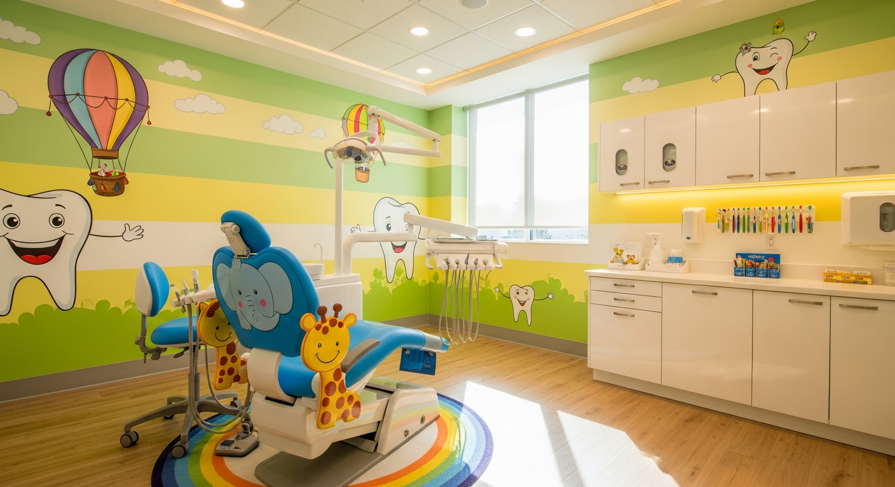
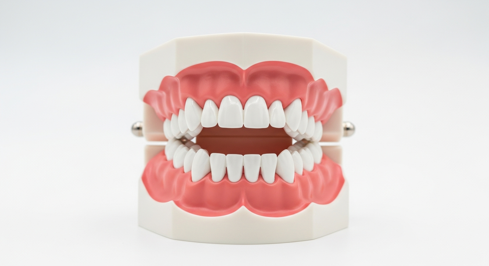
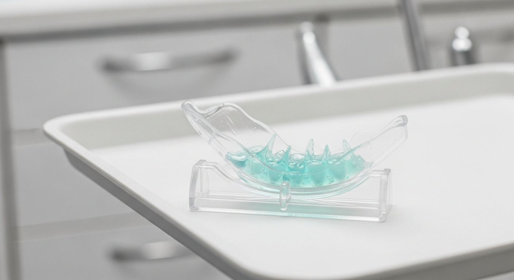
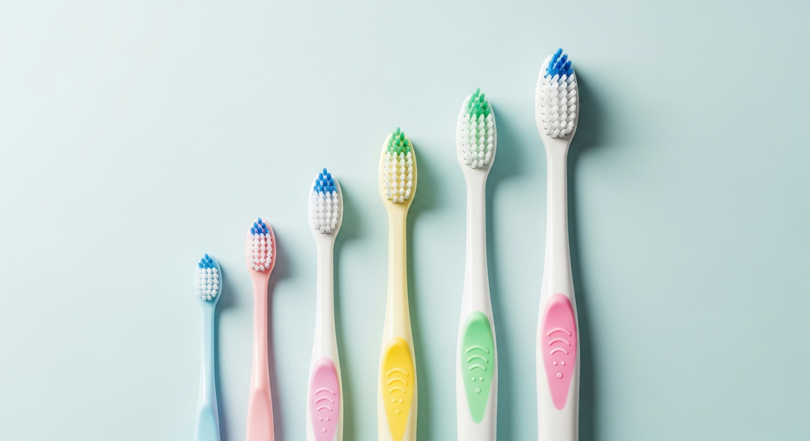
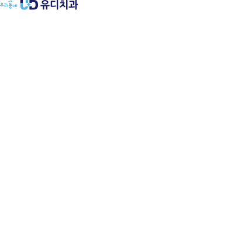

소아치과 첫 방문 | 아이 치과 시기 | 어린이 치과 검진
"아이를 치과에 데려가야 하는데, 아직 이가 몇 개 없는데 벌써 가야 할까?" 소아치과 첫 방문 시기를 고민하는 부모님이 많습니다. 결론부터 말씀드리면, 아이 치과 시기는 첫 유치가 나오는 생후 6개월~만 1세 사이가 가장 적절합니다.
대한소아치과학회에서도 만 1세 이전의 첫 치과 방문을 권장하고 있습니다. 이른 시기에 방문하는 이유는 치료가 아니라 예방입니다. 유치의 상태를 점검하고, 충치 위험도를 평가하며, 올바른 구강 관리 습관을 잡아주는 것이 목적입니다. 이 글에서는 어린이 치과 검진의 적절한 시기, 준비 방법, 그리고 부모님이 자주 궁금해하시는 질문들을 정리했습니다.

아이가 편안함을 느낄 수 있도록 설계된 소아치과 진료실
아이 치과 시기에 대해 가장 많이 듣는 질문이 "이가 다 나면 가면 되지 않나요?"입니다. 하지만 유치가 모두 나올 때까지 기다리면 이미 충치가 진행되어 있는 경우가 적지 않습니다.
| 시기 | 유치 상태 | 치과 방문 목적 |
|---|---|---|
| 생후 6개월~1세 | 앞니 2~4개 출현 | 첫 검진, 구강 관리 교육, 수유 습관 점검 |
| 만 2~3세 | 유치 16~20개 완성 | 충치 검사, 불소 도포, 양치 교육 |
| 만 4~5세 | 유치 20개 완성 | 충치 치료, 실란트, 교합 검사 |
| 만 6~7세 | 영구치 시작 (6세 구치) | 영구치 실란트, 교정 상담, 파노라마 촬영 |
첫 방문의 핵심은 치료가 아닙니다. 아이가 치과라는 공간에 익숙해지고, 긍정적인 경험을 쌓는 것이 가장 중요합니다. 첫 경험이 좋으면 이후 정기 검진에 대한 거부감이 현저히 줄어듭니다.
"어차피 빠질 이인데 꼭 치료해야 하나요?"라는 질문을 많이 하십니다. 유치는 단순한 임시 치아가 아닙니다. 아이의 성장 발달에 여러 가지 핵심적인 역할을 합니다.
영구치의 길잡이 역할을 합니다. 유치는 아래에서 자라나는 영구치가 올바른 위치에 나올 수 있도록 공간을 유지합니다. 유치가 충치로 일찍 빠지면 주변 치아가 빈 공간으로 쏠려서 영구치가 삐뚤게 나오거나 매복될 수 있습니다.
저작(씹기) 기능을 담당합니다. 유치가 건강해야 음식을 제대로 씹을 수 있고, 이것이 영양 흡수와 턱뼈 성장에 직접적인 영향을 줍니다.
발음 발달에 관여합니다. 특히 앞니는 'ㄷ', 'ㅌ', 'ㅅ' 등의 발음에 영향을 줍니다. 앞니가 일찍 빠지거나 손상되면 아이의 언어 발달에 영향을 줄 수 있습니다.
유치 충치를 방치하면?
유치의 충치가 깊어지면 뿌리 아래 영구치의 발육에도 영향을 줄 수 있습니다. 심한 경우 영구치의 법랑질 형성 이상(터너 치아)으로 이어질 수 있으므로, 유치라 하더라도 적절한 치료가 필요합니다.

유치 20개의 배열 구조 모형
소아치과 첫 방문에서 아이가 울거나 무서워하는 것은 자연스러운 반응입니다. 부모님이 미리 준비하면 아이의 불안을 크게 줄일 수 있습니다.
방문 전
치과에 대해 긍정적으로 이야기해 주세요. "이가 아프면 치과 간다"가 아니라 "치과 선생님이 이를 건강하게 도와준다"고 설명합니다. 치과 관련 그림책을 함께 읽거나, 인형으로 치과 놀이를 해보는 것도 좋은 방법입니다. 반대로 "주사 안 맞아" "안 아파"라는 말은 오히려 아이에게 주사와 통증을 연상시킬 수 있으므로 피하는 것이 좋습니다.
방문 시간
아이의 컨디션이 가장 좋은 시간대를 선택합니다. 보통 오전 10~11시가 적절합니다. 낮잠 시간이나 배고플 때는 피하세요. 아이가 평소보다 예민한 날이라면 일정을 조정하는 것도 방법입니다.
지참물
건강보험증(의료보험증), 아이가 좋아하는 작은 장난감이나 담요를 가져가면 도움이 됩니다. 현재 복용 중인 약이 있다면 약 정보도 준비합니다.
어린이 치과 검진에서는 단순히 충치 유무만 보는 것이 아닙니다. 아이의 연령에 맞추어 종합적인 구강 평가를 진행합니다.
충치 검사: 육안 검사와 함께 필요한 경우 X-ray 촬영으로 눈에 보이지 않는 치아 사이 충치도 확인합니다.
교합(물림) 검사: 위아래 치아가 올바르게 맞물리는지, 부정교합의 조기 징후가 있는지 확인합니다. 조기에 발견하면 성장기를 이용한 교합 유도가 가능합니다.
구강 습관 평가: 손가락 빨기, 입호흡, 혀 내밀기 등 치열에 영향을 줄 수 있는 습관을 확인하고 교정 시기를 안내합니다.
불소 도포: 치아 표면에 고농도 불소를 바르는 시술로, 충치 예방 효과가 30~40%로 보고됩니다. 통증 없이 1~2분이면 끝나는 간단한 시술입니다.

불소 도포에 사용되는 트레이
아이의 나이에 따라 관리 방법이 달라집니다. 부모님이 연령별 포인트를 알고 있으면 집에서도 효과적인 관리가 가능합니다.
| 연령 | 양치 방법 | 치약/불소 | 주의사항 |
|---|---|---|---|
| 0~1세 | 거즈/실리콘 손가락 칫솔로 닦아주기 | 치약 없이 물로 | 수유 후 구강 닦기, 야간 수유 줄이기 |
| 1~3세 | 부모가 닦아주기 + 스스로 잡는 연습 | 쌀알 크기 불소 치약 (1000ppm) | 우유병 충치 주의 (밤중 우유병) |
| 3~6세 | 아이가 닦고 + 부모가 마무리 | 콩알 크기 불소 치약 (1000ppm) | 간식 후 양치, 치실 사용 시작 |
| 6~12세 | 스스로 닦기 + 부모 확인 (8세까지) | 일반 불소 치약 (1000~1500ppm) | 영구치 실란트, 교합 관찰 |

아이 연령에 맞는 칫솔 크기를 선택하는 것이 중요합니다
특히 만 6세경 나오는 제1대구치(6세 구치)는 평생 사용할 영구치 중 가장 먼저 나오는 어금니입니다. 유치 뒤쪽에 조용히 올라오기 때문에 부모님이 인지하지 못하는 경우가 많습니다. 나온 직후 실란트(치아 홈 메우기)를 해주면 충치 예방 효과가 크며, 건강보험이 적용됩니다.
충치 예방에 가장 효과적인 두 가지 시술이 실란트와 불소 도포입니다. 각각의 역할이 다르므로 함께 적용하면 더 효과적입니다.
| 구분 | 실란트 (치아 홈 메우기) | 불소 도포 |
|---|---|---|
| 원리 | 어금니의 좁은 홈을 수지로 메워 세균 침투 차단 | 치아 표면의 법랑질을 강화하여 산에 대한 저항력 높임 |
| 적용 부위 | 어금니 씹는 면(교합면) | 모든 치아 표면 |
| 적용 시기 | 영구치 나온 직후 (만 6~13세) | 유치 나온 후부터 가능 (3~6개월 간격) |
| 건강보험 | 만 18세 이하 제1, 제2대구치 보험 적용 | 만 5세 이하 연 2회 보험 적용 (치과별 확인) |
| 예방 효과 | 어금니 충치 예방 60~90% | 전체 충치 예방 30~40% |
실란트는 어금니의 깊은 홈에 음식물과 세균이 끼는 것을 물리적으로 막아주고, 불소는 치아 자체의 저항력을 화학적으로 높여줍니다. 두 시술 모두 통증이 없어 아이들이 무서워하지 않으며, 각각 건강보험이 적용되는 조건이 있으므로 확인해 보시는 것이 좋습니다.
어린이 치과 검진은 3~6개월 간격의 정기 방문이 권장됩니다. 성인보다 주기가 짧은 이유가 있습니다.
첫째, 유치의 법랑질은 영구치보다 얇고 무릅니다. 같은 충치라도 유치에서는 2배 이상 빠르게 진행될 수 있습니다. 3개월 전 검진에서 이상이 없었더라도 다음 검진에서 치료가 필요한 충치가 발견되는 경우가 있습니다.
둘째, 성장기 아이의 치열과 교합은 계속 변화합니다. 정기적으로 관찰해야 교합 이상이나 부정교합의 초기 징후를 놓치지 않을 수 있습니다.
셋째, 어린 나이에 치과 방문 경험이 쌓이면 치과에 대한 불안감이 자연스럽게 줄어듭니다. 치료 없이 검진만 받는 경험이 반복되면, 나중에 치료가 필요한 상황에서도 아이의 협조도가 높아집니다.
영유아 구강검진 제도
국민건강보험공단에서 실시하는 영유아 건강검진에 구강검진이 포함되어 있습니다. 생후 18개월, 30개월, 42개월, 54개월, 66개월 총 5차례 무료로 받을 수 있습니다. 검진 시기가 되면 공단에서 안내문이 발송되며, 해당 기간 내 치과에 방문하면 됩니다.
Q. 아이가 너무 울어서 진료가 안 될까 봐 걱정됩니다
어린 아이가 낯선 환경에서 우는 것은 매우 정상적인 반응입니다. 소아 진료 경험이 있는 치과에서는 아이의 심리를 고려한 단계적 접근(Tell-Show-Do 기법)을 사용합니다. 첫 방문에서 꼭 모든 검사를 마칠 필요는 없습니다. 진료의자에 앉아보는 것만으로도 충분한 성과입니다.
Q. 유치 충치는 어차피 빠질 건데 꼭 치료해야 하나요?
유치 충치를 방치하면 영구치 발육에 영향을 줄 수 있고, 공간 상실로 인한 부정교합, 통증으로 인한 편측 저작 습관 등의 문제가 발생할 수 있습니다. 다만 자연 탈락 시기가 매우 가까운 경우(6개월 이내)에는 경과 관찰만 할 수도 있습니다. 치료 여부는 충치의 깊이와 해당 유치의 탈락 예상 시기를 종합적으로 판단합니다.
Q. 불소 치약은 아이에게 안전한가요?
대한소아치과학회와 미국소아과학회 모두 불소 치약 사용을 권장합니다. 중요한 것은 적정량입니다. 3세 미만은 쌀알 크기(약 0.1g), 3~6세는 콩알 크기(약 0.25g)의 불소 치약(1000ppm)을 사용합니다. 이 정도 양은 삼키더라도 안전한 수준입니다. 불소 치약을 사용하지 않았을 때의 충치 위험이 더 큽니다.
Q. 아이의 교정 치료는 몇 살부터 가능한가요?
교합 상태에 따라 다르지만, 일반적으로 만 7세경 교정 전문의의 첫 평가를 받는 것이 권장됩니다. 이 시기에 영구 앞니와 제1대구치가 나와 있어 교합 관계를 처음 판단할 수 있기 때문입니다. 턱뼈 성장 문제(주걱턱, 무턱 등)가 있는 경우에는 성장기를 이용한 조기 치료(1차 교정)가 더 이른 시기에 시작될 수 있습니다.
Q. 아이가 넘어져서 앞니가 빠졌어요. 어떻게 해야 하나요?
유치가 빠진 경우, 다시 심지 않는 것이 원칙입니다(아래 영구치에 손상을 줄 수 있으므로). 출혈 부위를 깨끗한 거즈로 눌러 지혈하고 치과에 방문합니다. 영구치가 빠진 경우에는 치아를 우유나 생리식염수에 넣어 가능한 빨리(30분 이내) 치과에 가면 재식 가능성이 높아집니다. 흐르는 물로 가볍게 씻되, 뿌리 부분을 만지거나 문지르지 않도록 주의합니다.

우리 아이 첫 치과 방문,
편안한 경험이 시작입니다
아이의 구강 상태를 점검하고 맞춤 관리법을 안내받으세요.
부담 없이 상담받아보세요.
031-546-0051 | 평일 09:30~18:30 / 토 09:30~14:30
더 자세한 정보는 홈페이지에서 확인하실 수 있습니다.
https://claude-old.vercel.app